Student guide
This chapter is for every student. In Culturals you can see what is happening on campus, register for events, get in at the door with a QR code, and join up to five clubs. Most students use it on their phone, so most screenshots here are from a phone.
If you have not signed in yet, read Getting started first.
What you see after signing in
You start on the Feed. The bottom bar on a phone, or the left sidebar on a computer, has five pages:
| Page | What it is for |
|---|---|
| Feed | Event cards from across campus. Your clubs can come first if you turn that on. |
| What's on | The event list, with filters for club, category and date. This is where you register. |
| My passes | One QR pass for each event you registered for. |
| Profile QR | Your personal QR code, plus the My clubs, Attendance and Settings tabs. |
| Clubs | Every club on campus. Join a club or leave one. |

Browse the Feed
Each event has a card showing the club, the date and time, the venue and how many places are taken. A chip shows whether the event is Upcoming, Live (happening right now) or Ended. Once you register, the card also shows your status: Pass ready, Waitlisted or Checked in.
On a computer, the cards are laid out in a grid:

Search the feed: type a word into Search events and clubs and press Enter. The feed then shows only matching events. Clear the box to see everything again. Searching for "carnatic", for example, leaves just the Music Club's Carnatic Music Recital:
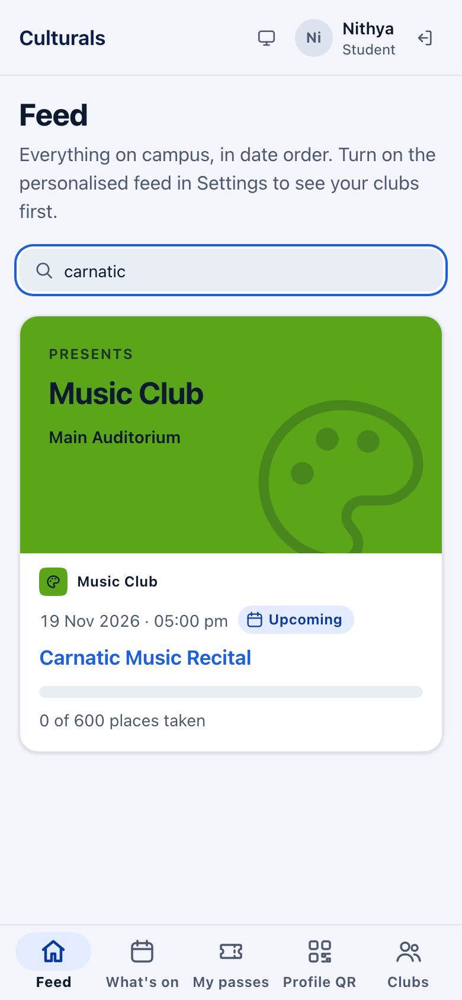
If you haven't joined a club yet, a note says "Nothing from your clubs yet — you haven't joined one." Tap Explore clubs to go to the club directory.
Put your clubs first (personalised feed)
By default the Feed shows everything on campus in date order. To see events from your own clubs first:
- Tap Profile QR, then the Settings tab.
- Turn on Personalised feed.
The Feed then has two sections: From your clubs first, then Across campus. Turn the switch off to go back to date order. This only helps once you are a member of a club.
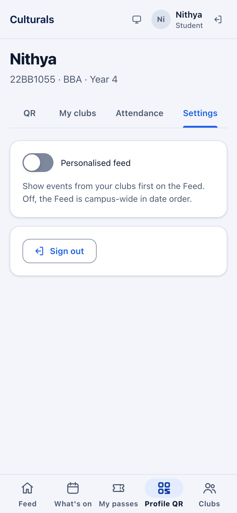
Find an event on What's on
- Tap What's on.
- Narrow the list with the filters if you like: - Club: tap the field to open a list of clubs grouped by category (on a phone it slides up from the bottom). Type in Find a club to search it, then tap a club. Pick All clubs to see every club again. - Category: for example Cultural, Literary, Technical or Sports. - Date: only events that start on that day.
- Tap an event's title to open its details.
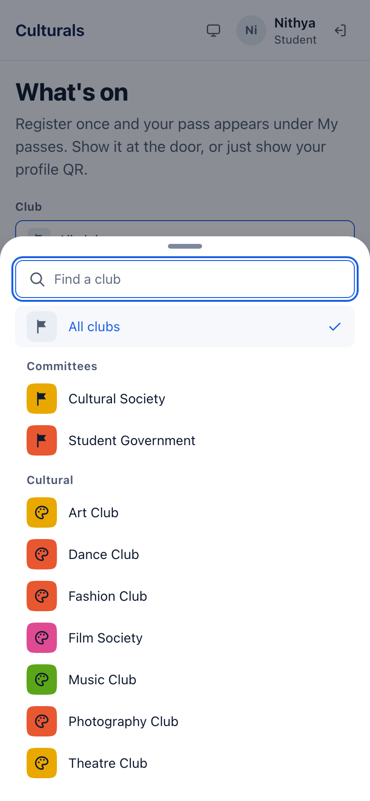
Each event shows its date, club, venue, times, a status chip (Published or Live now) and how many places are taken. Events you have registered for show Registered and a View pass button instead of Register.
On a computer you can also use the search box in the top bar. It finds events by title or club name. Tap Clear search to remove it.
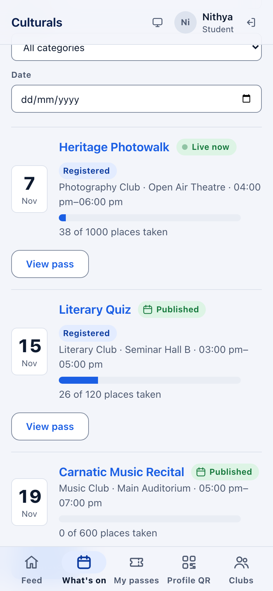
Only approved events appear here. A club's event is checked by the Cultural Society (for cultural and literary clubs), the Dean and, for big budgets, the Vice-Chancellor before it is published (see the approval flow). If the list says "Nothing published yet", no event has been approved yet.
Register for an event
In this example the student registers for the Carnatic Music Recital (Music Club, Main Auditorium, 19 Nov, 600 places), which has just been approved and published.
- Open the event from What's on (or tap its title on the Feed).
- Check When and where, Places taken and Left.
- In the Register panel, tap Register.
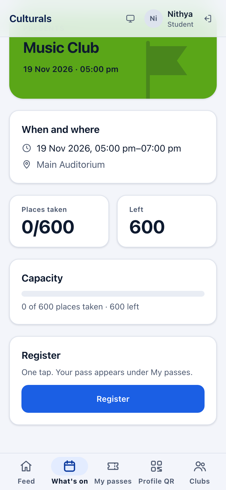
The panel changes to You are registered with a Pass ready chip, and a message confirms it. Your pass is now under My passes. Tap View pass to go straight to it.
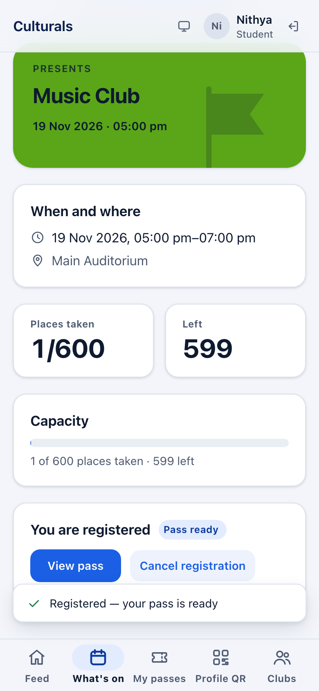
You can only hold one registration per event. If the button says Not open, the event is not taking registrations at the moment (for example, it has not been published yet, or it is over).
When an event is full: the waitlist
When every place is taken, the event list says Full — details instead of Register. The event page shows Left: Full and the message "This event looks full. The server has the final word — you can still try."
You can still tap Register:
- If a place has opened up in the meantime, you get a normal registration and a pass.
- If the event is still full, you join the waitlist. The event page says You are on the waitlist with a Waitlisted chip. You do not get a pass yet.
- When someone cancels, the first person on the waitlist gets the place and a pass straight away and is told by notification. The waitlist goes in the order people joined.
To leave the waitlist, tap Cancel registration on the event page, the same way as below.
Show your pass at the door
- Tap My passes. Each pass shows the club, event, date, time and venue, plus a QR code.
- At the entrance, tap the QR code. It fills the screen so it is easy to scan. Tap Close when you are done.
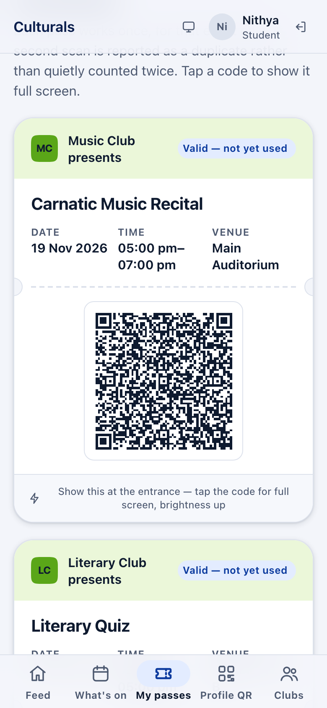
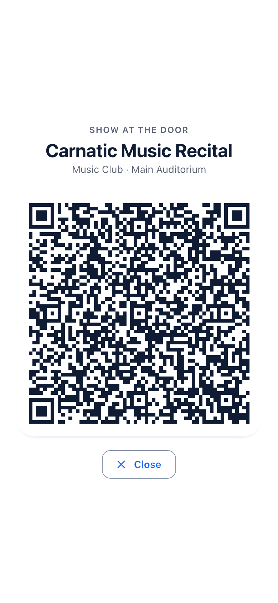
What the chip on a pass means:
- Valid — not yet used: ready to scan.
- Checked in: the door has scanned it. A pass works once, and a second scan is reported as a duplicate.
- Pass spent: the pass has already been used.
You can also skip the pass and show your Profile QR at the door (see below).
Cancel a registration
- Open the event from What's on or the Feed.
- In the You are registered panel, tap Cancel registration.
- The app asks "Cancel it? Your pass stops working immediately." Tap Yes, cancel to confirm, or Keep it to change your mind.
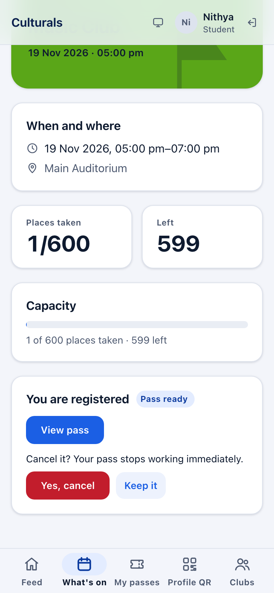
The place goes to the first person on the waitlist, if there is one. You can register again later if places are left. You can't cancel once you have been checked in: the button is greyed out and says Already checked in.
Your Profile QR
Tap Profile QR. The QR tab shows your personal code.
- It works at any event, walk-ins included. One scan registers you and checks you in.
- It doesn't contain your PRN. Someone who photographs it learns nothing about you.
- Tap the code to show it full screen.
- Lost your phone? Tap Lost your phone? Reissue, then Yes, reissue. The old code
stops working at the door at once, and the version number (
v1,v2…) goes up. Your event passes are not affected.
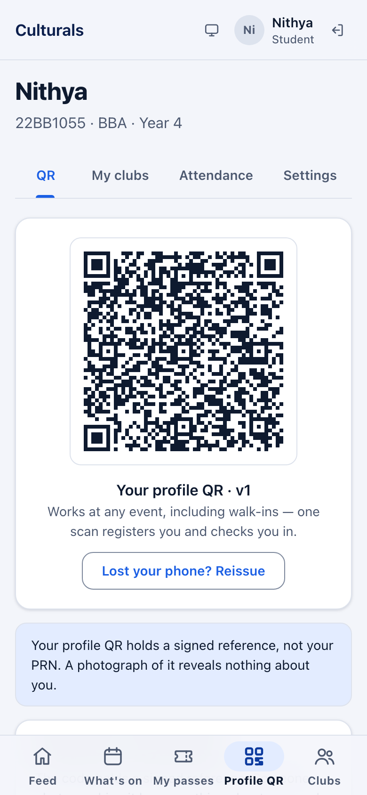
The other tabs on this page:
- My clubs: the clubs you belong to and your role in each, with a Leave button, plus any Pending requests.
- Attendance: the events where you have been checked in.
- Settings: the Personalised feed switch and Sign out.
Join a club
- Tap Clubs. The strip at the top shows how many clubs you are in, for example "You're in 0 of 5 clubs."
- Find a club. Search by name or tag, or tap a category (Cultural, Literary, Technical, Sports, Social service, Committees).
- Each card says how members get in: - Open to all: tap Join. You are a member straight away. - By approval: tap Request to join. The card then shows Requested until the club's officers accept or decline you.
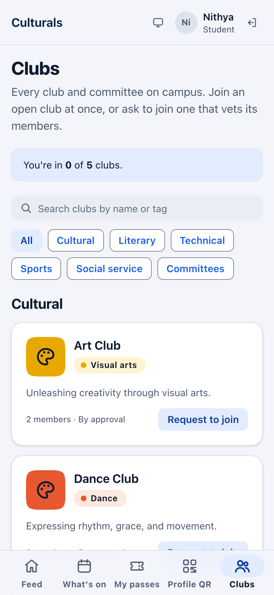
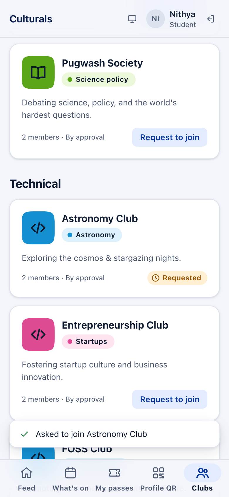
Your request also appears under Profile QR → My clubs → Pending requests:
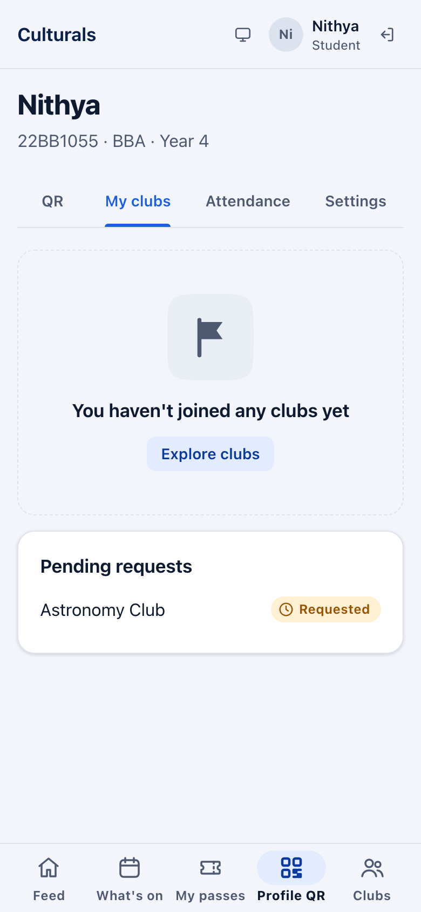
When you are accepted, the club card shows a Member chip (or your role, such as Secretary) and the club appears under My clubs.
The five-club limit
You can belong to at most five clubs at a time. When you reach five, the strip says "You're in 5 of 5 clubs — leave one to join another." and the Join and Request to join buttons are greyed out. If a club accepts your request after you have reached five, the request stays pending until you leave a club.
Leave a club
- Tap Leave on the club's card in Clubs, or next to it in Profile QR → My clubs.
- Confirm with Yes, leave, or tap Stay to change your mind.
You can ask to join again later. If you hold an office in the club (for example President or Treasurer), you can't leave until your office is handed over. The app explains why.
Good to know
- One registration per event, one pass per registration, and a pass works once.
- Your Profile QR works everywhere. If your pass won't load, show your Profile QR instead.
- Waitlisted means no pass yet. You get one automatically if a place frees up.
- Five clubs at most. Leave one to join another.
- "Live" on the Feed depends on the clock: an event shows Live only between its start and end times, and Ended after that. What's on shows the event's status instead, which stays Live now until the organisers close the event.
- Feedback after an event: you can't leave feedback in the app yet.
Known issues
For the maintainer. Found while writing this chapter (reseeded demo server, 7 Nov 2026).
- No feedback screen. The API supports feedback on an attended event, but no student page lets you leave it.
- Waitlist toast is wrong (found by reading the code, not reproduced: no seeded event
is full).
EventDetailPagealways shows "Registered — your pass is ready" after Register, even when the server put the student on the waitlist. - A waitlisted entry shows as "Pass spent" on My passes (from the code). The wallet
lists waitlisted registrations with no QR code, and
PassesPagetreats "no QR code" as spent ("This pass has been used") instead of "Waitlisted". - Attendance tab loses past events (from the code). The tab reads the passes list, which only includes published or live events. Once an event is closed, the check-in drops off Attendance.
- Live vs Ended after an event finishes. With the corrected times, Heritage Photowalk (4–6 pm) read Live on both pages at 5:44 pm, so the earlier mismatch is gone. At 8:14 pm the Feed said Ended (from the clock), but What's on still said Live now, because nobody had closed the event. Minor, but students may be confused.
- Seeded data limits. Every seeded club is By approval and no event is full. So the Join button, the club limit, Leave and the waitlist couldn't be shown in screenshots. They are described from the UI text and code.